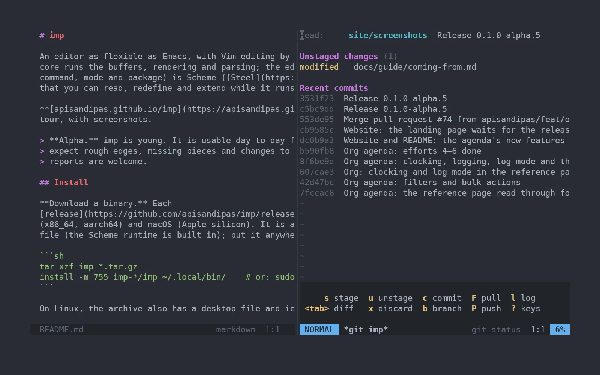
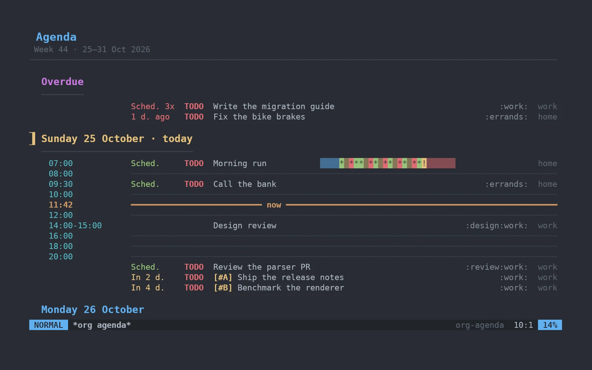
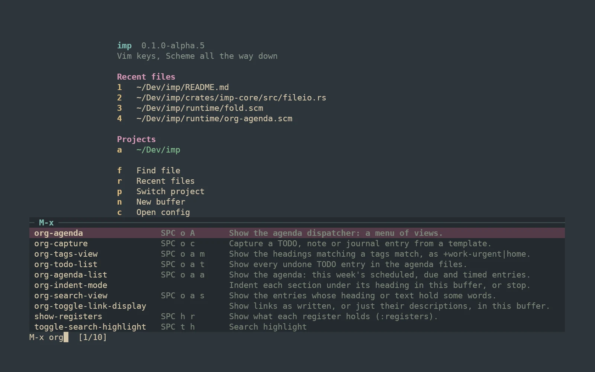
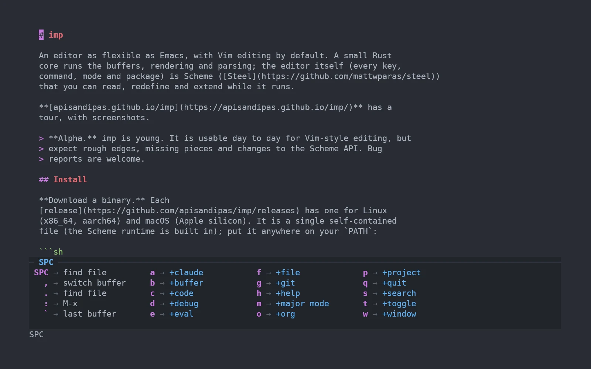
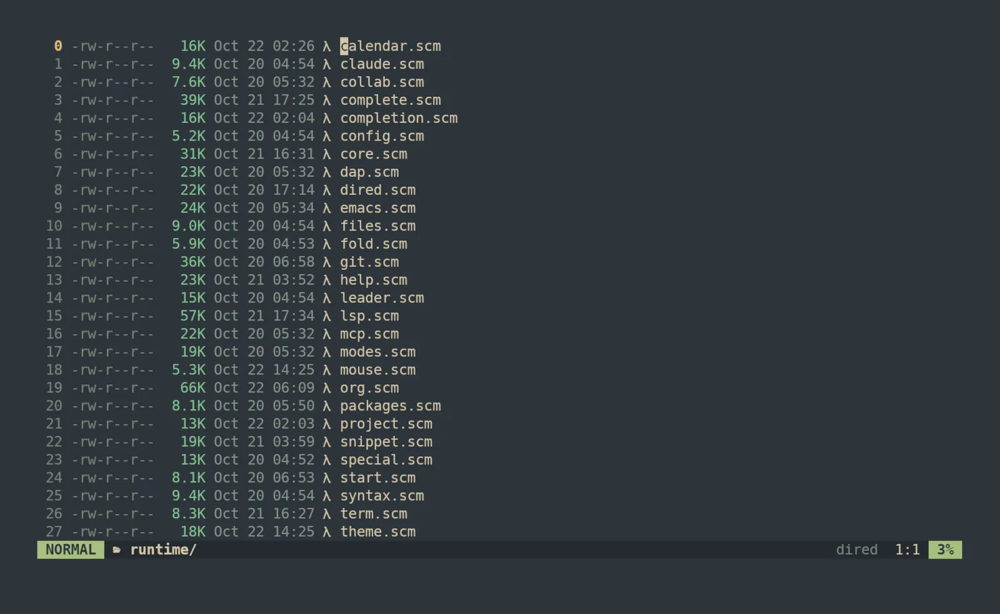
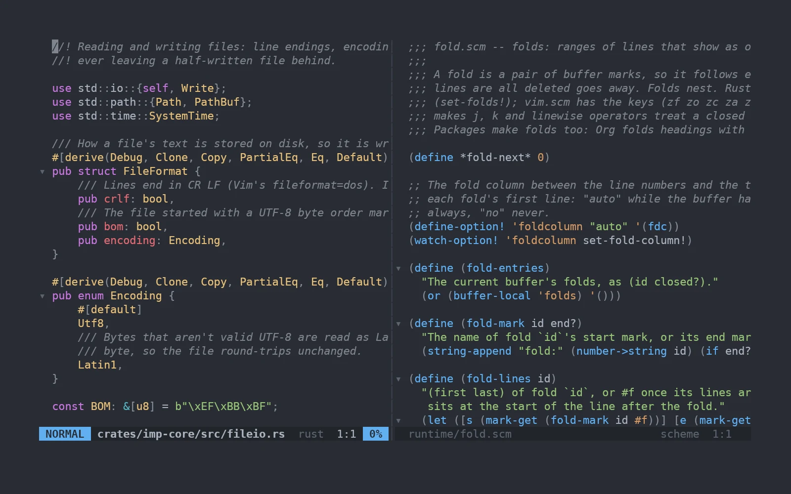

From Vim or Neovim
Motions, operators, text objects, counts, ., registers, macros, marks, visual modes, :s, :g, folds and splits. Each is tested against what real Vim does.
ciw dap qa :%s C-w v
Free and open source · Linux and macOS
Vim's editing. Emacs's depth. One fast binary. In imp, every key, command and mode is a few lines of Scheme you can open, change and reload without restarting.
init.scmNo restart, no plugin manifest, no build step. It's in M-x too, with its key beside it, and SPC h f shows its docstring.
Switching editors usually costs you a month of fumbling. imp starts out speaking the dialects you already know.
Motions, operators, text objects, counts, ., registers, macros, marks, visual modes, :s, :g, folds and splits. Each is tested against what real Vim does.
ciw dap qa :%s C-w v
Press SPC and a menu shows what comes next: files, buffers, windows, projects, search, git, code, Org, help. M-x runs any command by name, with its keys and docs beside it.
SPC f f SPC p p SPC g g M-x
C-z switches to an Emacs state, with C-x C-f, C-x C-s and friends. Describe any key, function, option or face, then redefine it from the same window.
C-x C-f SPC h k SPC h f C-c C-c
These are real screenshots of imp, not mockups. Git, Org, a file browser and a command palette all come in the box.
SPC g g opens status down the right: stage, unstage, commit and browse history from the keyboard, beside the code you're working on. q puts it away.

Outlines, TODO states, schedules and deadlines with a date picker, an agenda, capture templates, refiling, and tables that align themselves. Headings get larger type in the window, and links show only their text until the cursor reaches them.

M-x fuzzy-matches every command and lists its key binding and the first line of its docs. The ones you write in init.scm show up the same way.

Press SPC and pause: imp lists what each next key does. You'll stop needing the menu in about a week, and define-leader! adds your own entries.

:Ex lists a directory with permissions, sizes and times. Rename by editing names, delete by deleting lines, and ( hides the details.

Tree-sitter highlighting and text objects. Language servers give diagnostics, go-to-definition, references, rename, code actions, formatting and completion. Debugging works over DAP. Drag the divider to resize.

imp's Rust core handles buffers, rendering and parsing. Everything else, from Vim's motions to the git interface, is Scheme in runtime/. You can read it, and redefine any piece from your config.
init.scm and SPC e b. No restart.use-package! loads one from disk or from git.;; Options, a theme and a key.
(set-option! 'relativenumber #t)
(load-theme! 'gruvbox-dark)
(define-key! 'normal "C-s" 'save-buffer)
;; Packages that come with imp.
(use-package! 'olivetti) ; a centred column
(use-package! 'org-babel) ; run source blocks
;; Your own command, on SPC and in M-x.
(define-command! 'insert-date
(lambda (count)
"Insert today's date at the cursor."
(begin-change!)
(buffer-insert! (cursor)
(without-final-newline
(cadr (run-shell "date +%F" ""))))))
(define-leader! "id" 'insert-date "insert date")imp opens in a GPU-drawn window, with zoom, padding and see-through backgrounds. Over SSH, on a console, or with --tui, the same binary runs in your terminal.
imp --daemon keeps your editor running. Attach to it from any terminal with --connect, even from another machine over SSH.
M-a opens Claude Code for the current project in a side window. Hiding it keeps it running. Send it the selection, the buffer or a file reference, already labelled with lines.
Language server suggestions, file paths, imp's own names with their docs, and words from your open buffers, ranked together. Snippets expand with tab stops, and VS Code snippet files load as they are.
Every command and function carries Emacs-style documentation. SPC h F names the faces under the cursor, so you know exactly what to restyle.
A single self-contained binary for Linux (x86_64 and aarch64) and macOS on Apple silicon, with the Scheme runtime built in. Nix users get a flake.
Download, put it on your PATH, run imp. The start screen links straight to your config.
imp is alpha. It's good enough for daily Vim-style editing, but expect rough edges and changes to the Scheme API. Bug reports are very welcome.
Grab the archive for your platform from the releases page, then:
tar xzf imp-*.tar.gz
install -m 755 imp-*/imp ~/.local/bin/
impOn macOS, clear the quarantine flag first: xattr -d com.apple.quarantine ~/.local/bin/imp
Needs recent stable Rust and a C compiler. No other libraries.
git clone https://github.com/apisandipas/imp && cd imp
make installmake install-tui builds a terminal-only imp. make upgrade pulls and rebuilds.
The right choice on NixOS, where the window needs Nix's graphics libraries.
nix profile install github:apisandipas/impInstalls into ~/.cargo/bin.
cargo install --git https://github.com/apisandipas/imp imp-editorAdd --no-default-features for a terminal-only build.